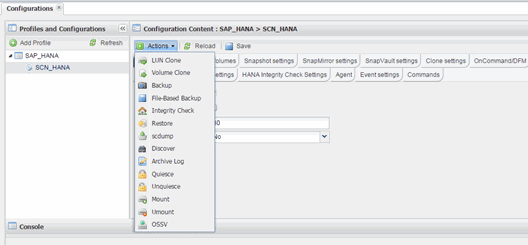
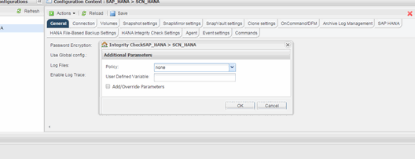

Richiedi modifiche alla documentazione
Richiedi modifiche alla documentazione Modifica questa pagina
Modifica questa pagina Scopri come collaborare
Scopri come collaborare
La versione in lingua italiana fornita proviene da una traduzione automatica. Per eventuali incoerenze, fare riferimento alla versione in lingua inglese.
Esecuzione dei controlli di integrità del database dalla GUI di Snap Creator
Collaboratori
È possibile eseguire i controlli di integrità del database dall’interfaccia grafica utente (GUI) di Snap Creator.
È necessario aver attivato il parametro DB Integrity Check nella scheda HANA Integrity Check Settings (Impostazioni controllo integrità HANA).
-
Selezionare la configurazione HANA_database_Integrity_check.
-
Selezionare azioni > Integrity Check.

-
Impostare l’opzione Policy (criterio) su None (Nessuno) e fare clic su OK.
